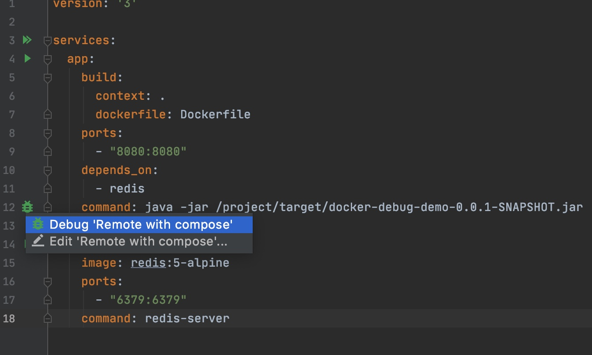
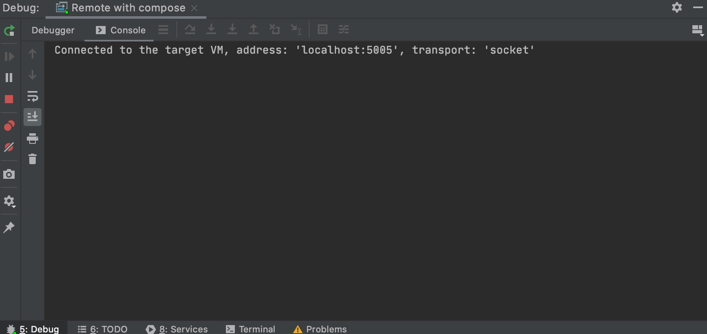
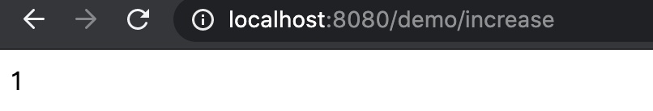
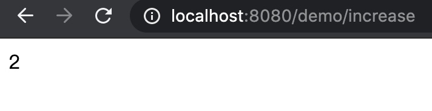
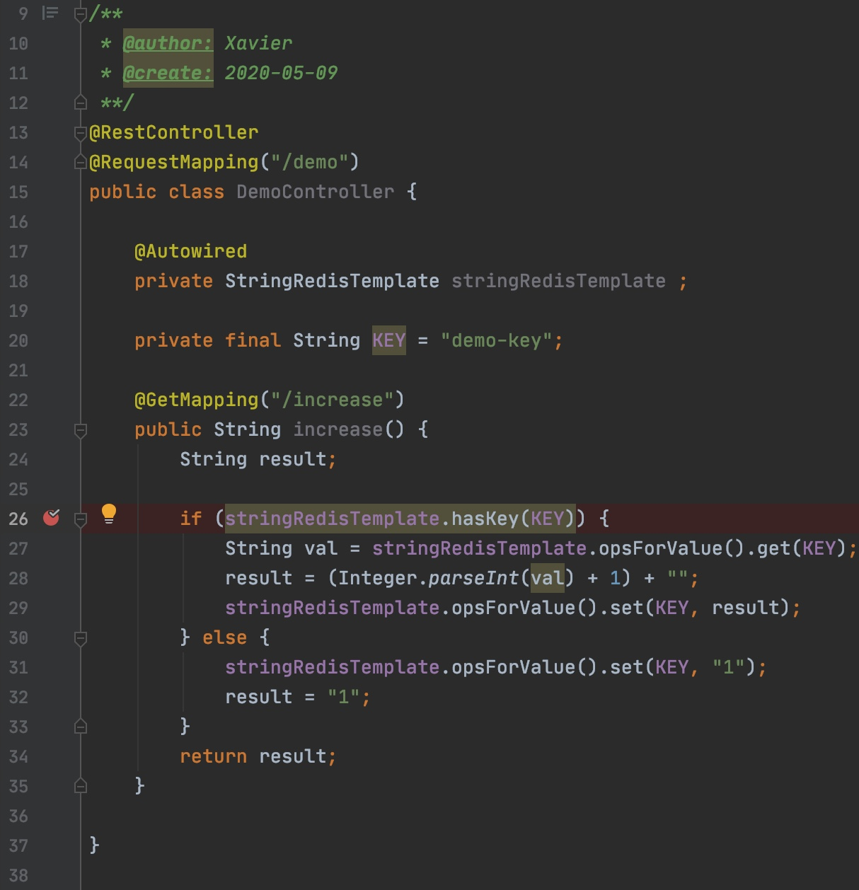
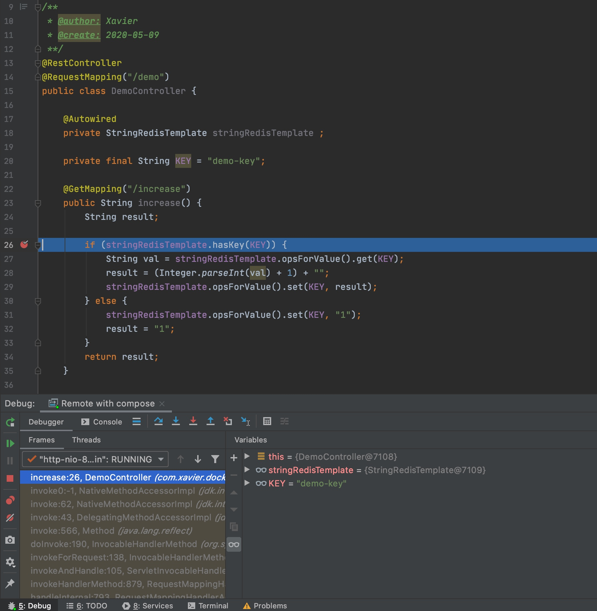
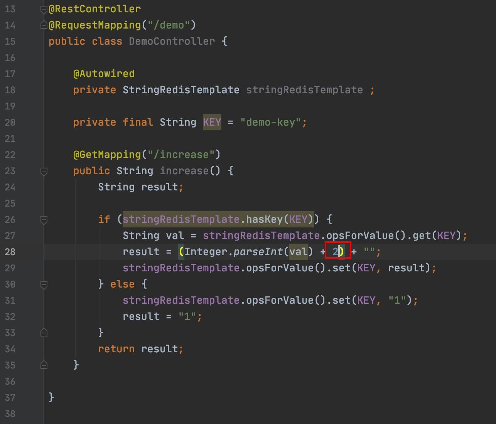
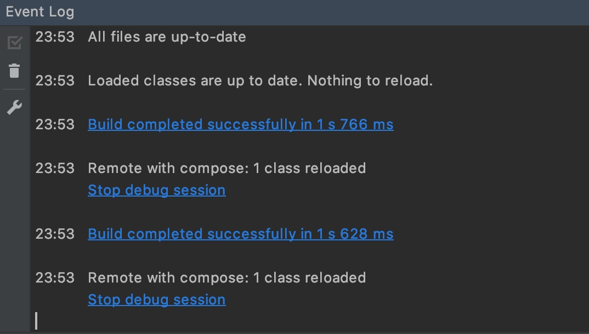
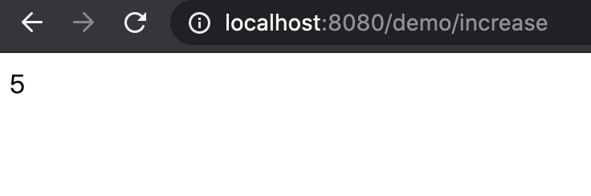
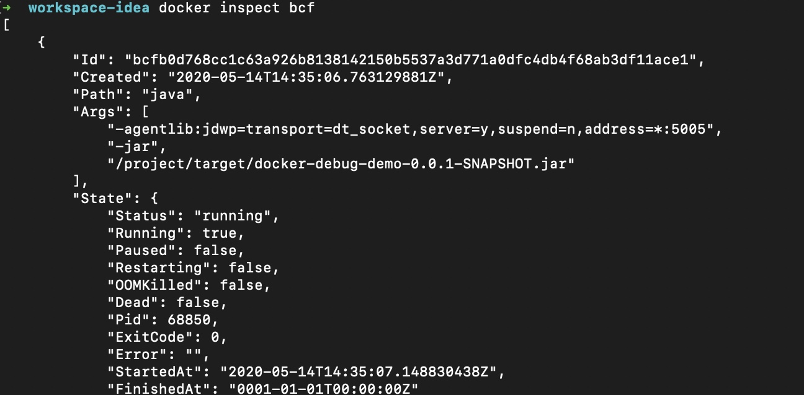

写在前面
前阵子开始学习Docker，容器化确实是很方便很有魅力的技术，因为在工作中并没有用到，便想着能不能在自己的日常开发中使用学习。
实践上的话第一个想到的还是用来构建开发环境，不同于其他发行版多的语言，Java开发环境中JDK还是比较少变化的（虽然这几年迭代速度快了很多），而且Java是编译型语言，在将Docker运用到开发环境中感觉还是较为麻烦的，这里记录一下自己的折腾过程。
环境说明
本文主要围绕使用IDEA Community进行Spring Boot应用的开发做记录，在网上查找资料时感觉IDEA不同版本下对Docker的支持差别还蛮大的，毕竟Docker也是这几年才快速发展的技术，IDE厂商们跟进肯定也不是一步到位的，前期坑也不少，如果想在不同版本尝试体验的话，我会推荐你直接查看对应版本的IDEA官方Guide。
本文涉及的工具版本等如下：
- IDEA Community 2020.1.1
（安装好Docker和Spring插件） - Docker 19.03.8
- docker-compose 1.25.4
目标效果
首先是程序，主要想实践一个每次访问后递增数字的Restful接口，数字存在Redis容器中；
开发效果上当然想尽量能够跟直接在本地开发一样，包括热更新等的使用体验。
程序的运行环境完全使用Docker
文件准备
Demo的代码可以查看我的Github仓库。
Java程序
首先先通过Spring Assistant插件创建一个Spring Boot项目，勾选上web，Redis和devtool等需要的依赖后，先实现需要的程序：1
2
3
4
5
6
7
8
9
10
11
12
13
14
15
16
17
18
19
20
21
22
23
24
("/demo")
public class DemoController {
private StringRedisTemplate stringRedisTemplate ;
private final String KEY = "demo-key";
("/increase")
public String increase() {
String result;
if (stringRedisTemplate.hasKey(KEY)) {
String val = stringRedisTemplate.opsForValue().get(KEY);
result = (Integer.parseInt(val) + 1) + "";
stringRedisTemplate.opsForValue().set(KEY, result);
} else {
stringRedisTemplate.opsForValue().set(KEY, "1");
result = "1";
}
return result;
}
}创建Dockerfile
创建一个Dockerfile，拷贝项目后执行mvn packge打包：1
2
3
4
5
6
7
8
9FROM openjdk:11
COPY . /project
RUN apt-get update \
&& apt-get install -y maven \
&& cd /project \
&& mvn package
CMD ["java", "-jar", "/project/target/docker-debug-demo-0.0.1-SNAPSHOT.jar"]创建docker-compose.yml
创建docker-compose文件，主要包含执行jar包的app容器和redis容器1
2
3
4
5
6
7
8
9
10
11
12
13
14
15
16
17
18version: '3'
services:
app:
build:
context: .
dockerfile: Dockerfile
ports:
- "8080:8080"
depends_on:
- redis
command: java -jar /project/target/docker-debug-demo-0.0.1-SNAPSHOT.jar
redis:
image: redis:5-alpine
ports:
- "6379:6379"
command: redis-serverSpring配置文件
因为运行在Docker上，application.yml上redis的host填入redis容器的名称。1
2
3
4
5spring:
redis:
database: 0
host: redis
port: 6379
运行程序
安装好Docker插件后在docker-compose.yml文件左侧会有启动和debug图标，直接启动跟用docker-compose up差不多，下面记录一下debug启动。
启动参数配置
点击
docker-compose.yml文件左侧的debug图标后，在出现的面板上勾选上当前模块，然后双击下面的launch编辑docker的启动参数。
关键在于-agentlib:jdwp=transport=dt_socket,server=y,suspend=n,address=*:5005这个参数，它的作用是指定JVM开启调试端口，后面踩坑记录里也会涉及到它。如果JDK是8或者之前的版本，address的值改成5005，即
address=5005

<center>启动面板配置</center>

<center>编辑Docker启动参数</center>Debug模式启动
编辑好启动器后可以直接点击点击
docker-compose.yml文件左侧的debug图标启动程序，不过因为会重新创建容器，所以如果已经有容器在运行的话要先停止运行并删除。
点击启动程序 
启动成功 访问程序
启动后通过
http://localhost:8080/demo/increase连续访问接口，递增的接口便完成了。
第一次访问 
第二次访问 调试程序
这个时候已经可以正常打断点和调试程序了。

设置断点 
访问接口进入断点 热部署
如果事先引入了
devtools依赖的话，热部署也是可以直接用的（需要重新编译）。
修改程序递增值为2 
重新编译后日志 
修改后第一次访问 
修改后第二次访问 可以看到递增值变成了2，这里容器并没有重新启动的，不过如果修改配置文件或者依赖文件的话就需要重启容器或者重新build了，这个还是相对麻烦的。
踩坑记录
遇到handshake failed - connection prematurally closed
在启动容器的时候有遇到启动不成功，报一下log的情况：
1 | 10:21 Error running 'Remote with compose': Unable to open debugger port (localhost:5005): java.io.IOException "handshake failed - connection prematurally closed" |
跟上面的Dockerfile不同的地方在于当时根据官方DEMO学习，执行默认命令的时候用了ENTRYPOINT而不是CMD，而在docker-compose.yml文件的代码如下：
1 | version: '3' |
这里用的是command命令，因为Dockerfile和docker-compose.yml文件的命令基本是一致的，所以我去看了下docker-compose.yml文档，发现确实有entrypoint参数，并且有下面这段Note：
1 | Setting entrypoint both overrides any default entrypoint set on the service’s image with the ENTRYPOINT Dockerfile instruction, and clears out any default command on the image - meaning that if there’s a CMD instruction in the Dockerfile, it is ignored. |
而command上并没有类似的Note，这说明docker-compose.yml文件的entrypoint可以覆盖Dockerfile的CMD，但command应该是没法覆盖Dockerfile的ENTRYPOINT的，于是通过将Dockerfile的ENTRYPOINT改成CMD，果然可以正常执行了。

写这个Demo时候我都是参考官方Demo的代码来写的（后来试着跑官方Demo也有同样问题），算是踩了官方的坑，不过也是有自己对Docker还不太熟悉的原因吧。
写在后面
IDEA对于Docker的支持总体来讲还算成熟，但用的时候还是有一些不太舒服的地方，比如修改依赖或者配置等后需要重新打包镜像，应用的调试信息没法在IDEA的控制台查看，还时不时可能有一些小坑等等。但好处也是一样的，随着Java大版本发布频率变高，可能个人开发环境需要多个版本JDK的情况会变多，那么用Docker隔离环境还是很舒服的，特别是对我这样强迫症而言，我现在都有把本地机器各种环境都搬上Docker的冲动了。